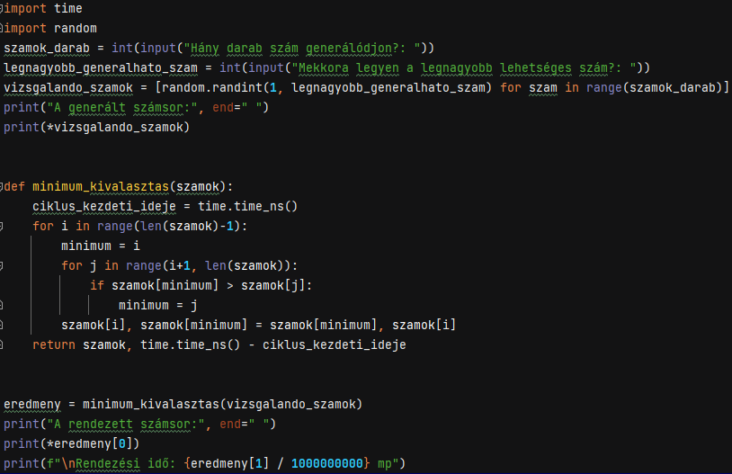
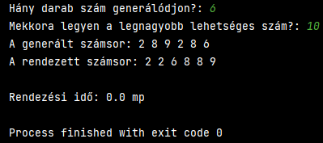

| Jellemzők: | |
|---|---|
| Működése: | A minimum kiválasztásos rendezés alapötlete a minimum keresést használja fel. A rendezendő tömbben megkeressük a legkisebb elemet, majd ezt helyezzük a legelső indexre. Ezt kihagyva ismét megkeressük a legkisebb elemet, amit aztán a második helyre teszünk, majd egészen addig ismételjük a folyamatot, amíg a tömb végére nem érünk. |
| Hatékonyság: | Az optimalizációnak köszönhetően a cserés rendezésnél gyorsabb nagyméretű tömbök rendezésében, azonban az algoritmus futási ideje még mindig a négyzeteshez közelít. |
| Tárigény: | N+1, azaz O(N) Ordó függvény használatával. |
| Összehasonlítások száma: | N*(N-1)/2, azaz O(N2) Ordó függvény használatával. |
| Mozgatások száma: | 3*(N-1)/2, azaz O(N) Ordó függvény használatával. |
| Példa a minimumkiválasztásos rendezésre: | |
 |
 |